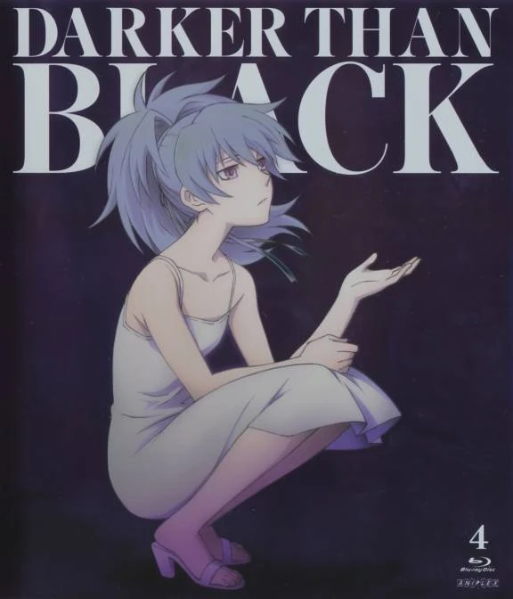
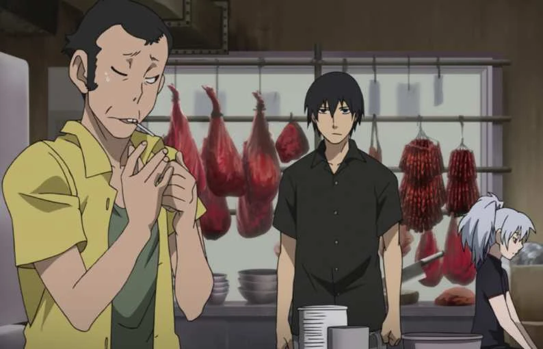
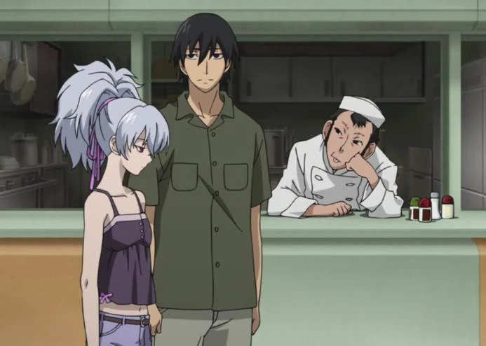
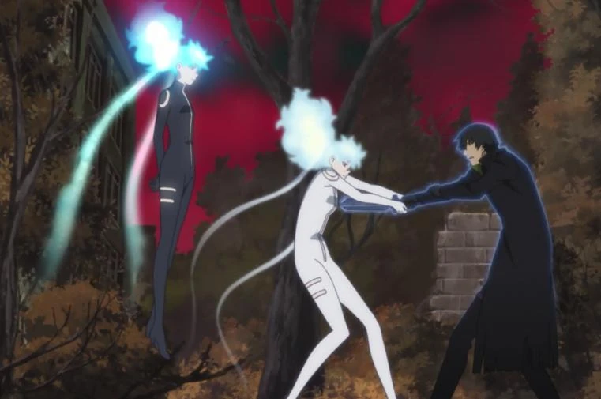
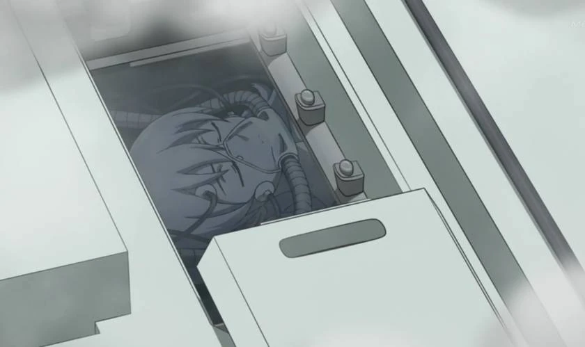
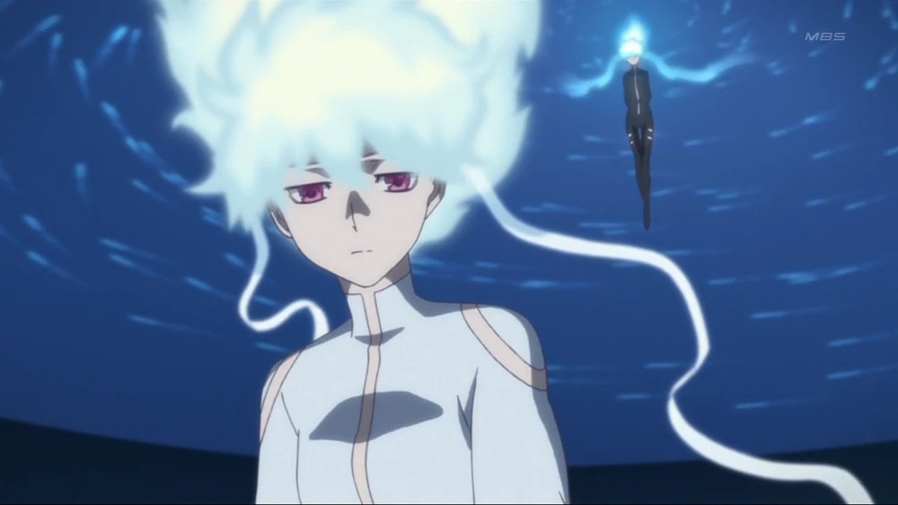
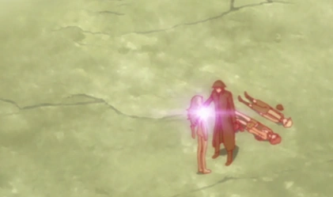
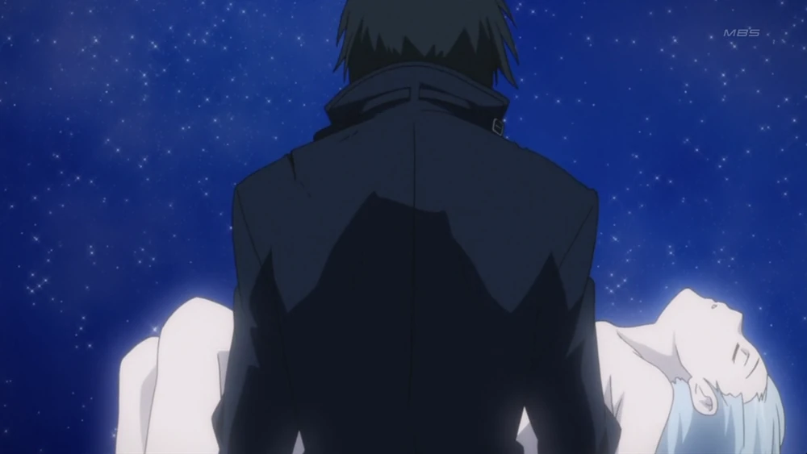
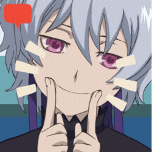

Part In The Story
The Black Contractor
Yin is a supporter in Hei 's team who uses her ability to locate and track a target.

Many years ago Kirsi (Yin) is playing the piano under the watch of her teacher, Kastinen. In the present Yin has apparently run away. Guy and Kiko are asked by Kastinen to look for Yin. Yin is targeted by the Russian Intelligence, who try to track her, and capture her to gather information. Hei fights with the 2 members, Itzhak & Bertha, helping Yin escape. Kastinen, along with Guy and Kiko decides to hide Yin for her safety.
Then the Syndicate orders Huang and Hei to kill Yin. Yin senses that Itzhak & Bertha are getting closer, so they leave the train and head for an abandoned building. Yin plays a piano which happens to be there. More scenes from Yin's past are shown while she plays. Hei arrives at the building to take back Yin. Kastien makes a stand, thinking Hei was a criminal who's after Yin. The two are interrupted by Itzhak & Bertha. Hei battles them again. Bertha uses her ability to cause a cardiac arrest on Hei. Hei uses his electricity manipulation to restart his heart, and severely injures Bertha. Itzhak is shot by Huang, who then turns to target Yin. Through the sniper scope, he see's tears in Yin's eyes. Astonished that a doll shows emotion, he couldn't bring himself to shoot. Yin was given the choice by Hei to either go with Kastinen or stay with them. She decides to stay.
At the end of the first season, she went rogue with Hei.
Gaiden

Following the Tokyo Explosion incident, Hei and Yin flee to Okinawa. They pose as newlyweds on their honeymoon while Hei tries to find a way out of the country. While there, Yin starts acting on her own. Hei runs into a woman at the hotel who looks almost exactly like Amber. Yin notices this, and after seeing Hei talking with the woman and later feeling distant from him, she uses of her observation spirit that night. Although Hei wakes up and stops her from doing anything drastic, Yin sees enough to be able to say that the woman was not Amber but was indeed a Contractor. Yin tries to suggest that he get out of there, however Hei comforts her and vows not to leave her by herself. Yin is taken prisoner by the Syndicate the following morning and brought to an old abandoned building. Hei tracks her down and while he is fighting the Contractor, Yin’s observation spirit appears behind them as the Contractor shoots themselves in the head. Hei then kills most of the rest of Yin’s captors and saves her.

Hei and Yin make their way to Hong Kong, where they conspire with Qin to trap their pursuers by pretending to sell Yin. They are contacted by Xiao Jie and meet with her and her brothers to discuss the sale of Yin. The deal falls through when Yin says that Xiao intends to kill them anyway and Hei fights Xiao while Qin and Yin flee. Hei is rescued from a though battle by Yin's awakening power, which causes Xiao to kill her self with her own ability. He is then confronted by Yin's observer spectre, which he initially mistakes for Yin herself due to its tangible and human appearance. Qin and Yin return to Hei and are then confronted by the surviving Xiao brother, who is killed by EPR survivors.

They are brought to EPR's hideaway in the jungle where Hei recovers from his injuries. Yin tells him that there is something trying to talk to her and that it is more prevalent when Hei is with her. Hei says that they should part ways, but Yin refuses. Hei is then lured in to the jungle by Xi-Qi, who then abducts Yin in a bid to force her awakening. During this, most of the Contractors at the site are killed by Yin's power.

Xi-Qi brings Yin to an abandoned building where he has arranged to sell Yin to a number of factions. Hei attempts to rescue Yin, but due to Xi-Qi's illusions he ends up electrocuting Yin, whose awakening quickens. Hei escapes, but she kills the others present. Outside the building, Hei is confronted by the both the observer spirit and Yin herself. Yin tries to make Hei kill her, but he refuses. There is an explosion before Yin stabilizes.
Gemini of the Meteor

Yin is then taken into custody by section three while in a stable condition. While in a unconscious state she is contacted by Izanagi (Shion). Here it is revealed that Izanami killed all EPR's hide away in order to take "samples" for Izanagi's plan to create an alternate Earth. Izanagi asks Yin if there will be a day where they actually meet one another. She replies by saying yes, because Hei told her. Izanagi responds by saying he shares Yin's anticipation for Hei's arrival and offers to make her a deal if the day comes. However, it is possible this this is not Yin speaking to Izanagi, but Izanami.
Yin is first seen in the second episode of the second season in a flashback by Hei after he is caught in an energy field created by drones designed by Yōko Sawasaki. In Hei's flashback, Yin stands on the edge of a cliff, naked, surrounded by numerous, bloodstained corpses, as Hei runs towards her. She bids him farewell and seemingly falls off the cliff, losing her ribbon in the process. In the third episode, Hei states that he'll 'kill her' after mentioning her to Mao, July and Suou. She is first seen in the present by Misaki upon being allowed to view Izanami, with her seeing Yin encased inside the capsule, and she is seen again in the next episode aiding Suou from afar by drowning Michiru, and surveying Section 3's submarine with her observational apparition. She also attempts to interact with Hei, but to no avail, as Hei, no longer being a Contractor, can no longer see her.
In her next outstanding appearance, she, as Izanami, is explained by Yōko Sawasaki to be a weapon made solely for the purpose of slaughtering Contractors, as Repnin hinted at prior, and as further flashbacks show, with Yin slaying several Contractors, including the ones scattered around her in her first appearance. She is then seen in some sort of garden, with her observer apparition taking her physical form, and being clad in a new outfit, with her body and hair glowing blue, the same color as a Contractor's aura.

She is then seen murdering several Contractors, finishing off her final opponent by, akin to Michiru, presumably turning his own ability, pyrokinesis, against him, burning him alive. She hums a tune afterwards and walks forward watching the moon as specters gather around her, saying that, "it won't be long now." We then see her again after Shion finishes making his deal with her. The agreement (that was teased in Gaiden) involves Shion's new Earth to be inhabited by the souls Izanami has collected. Yin's (or possibly Izanami's) wish is never revealed to the viewers.

Suoh and July's souls are then absorbed and sent to the cloned Earth. Hei shows up as Suo begins to fade away to the next world and comforts her till she passes. Yin then speaks with Hei, telling him that it is not too late and that he can still kill her. Hei smiles and touches Yin's shoulder. It is unknown what he did, but he has his powers back due to Izanami shattering the meteor core that held them and tied them to Suoh.

At the end of the episode, the being born from both Izanami and Izanagi is seen in a coffin on a bed of flowers somewhere in the gate. Mr Smith and personnel surround the coffin and as the agent looks inside, the being absorbs their souls and arises. While Misaki talks about the aftermath of everything, in a flashback, Hei is seen walking away, carrying Yin's body. From this point on their whereabouts are unknown and it is unclear if Yin survived or not.
Table Of Contents
